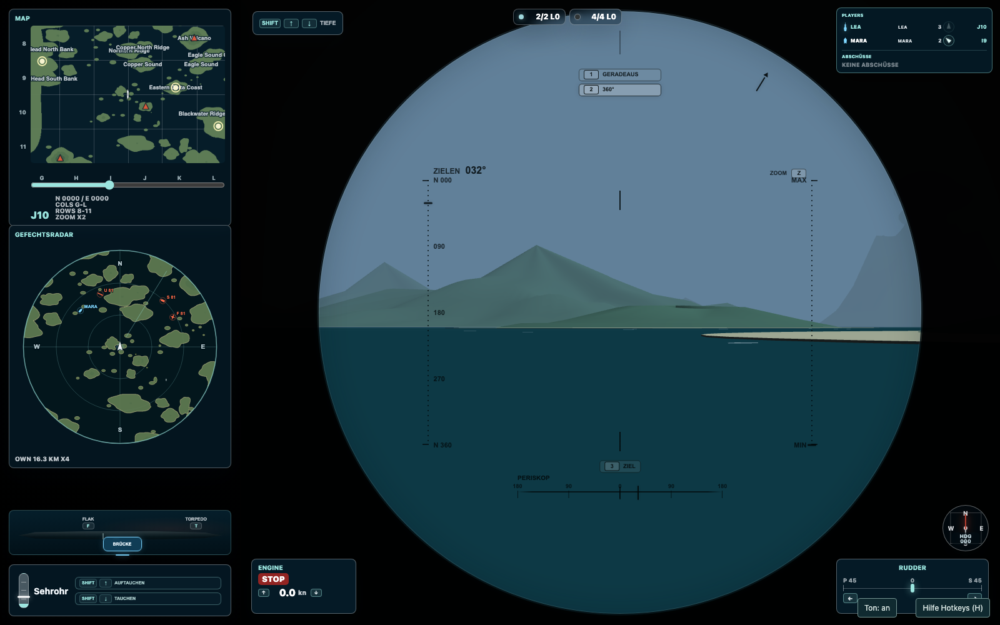
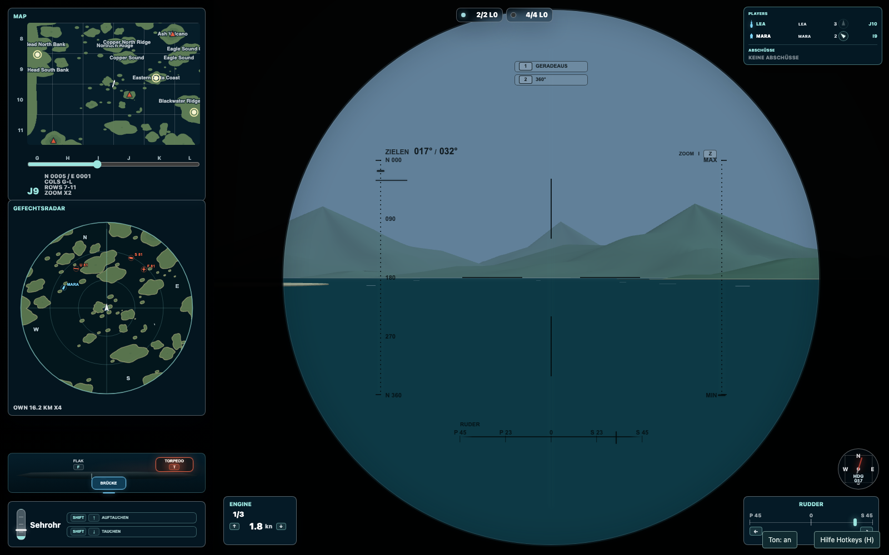
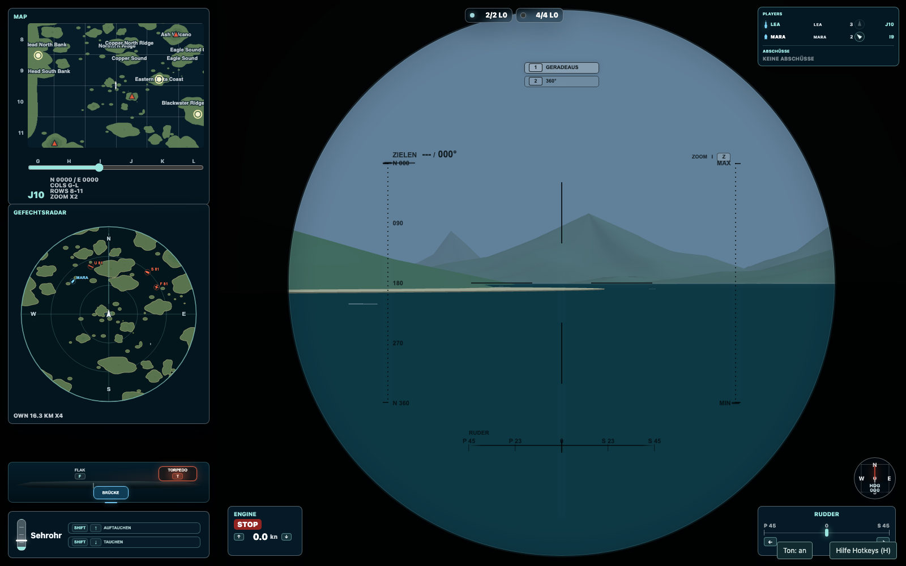

Drei Tiefen, drei Spielweisen
| Tiefe | Was du damit gewinnst – und riskierst |
|---|---|
| Aufgetaucht | Gute Rundumsicht und die Flak sind verfügbar. Dein ganzes Boot ist für andere sichtbar und angreifbar. |
| Sehrohrtiefe | Du suchst und zielst mit den Sehrohren. Der Rumpf verschwindet, das Sehrohr und die Wasserbewegung können dich aber verraten. Mit 1/3 Fahrt oder weniger bist du sehr unauffällig, nicht unsichtbar. |
| Tief getaucht | Kein Sehrohr über der Oberfläche. Du orientierst dich mit der Unterwasseranzeige und kannst andere getauchte U-Boote auf passender Tiefe angreifen. Wasserbomben bleiben gefährlich. |
Mit Umschalt + ↓ tauchst du eine Stufe tiefer, mit Umschalt + ↑ eine Stufe höher. Das braucht Zeit. Fahrt und Sicht passen sich der tatsächlichen Tiefe an. Die Flak kannst du nur aufgetaucht bedienen.
BILD U03So wenig ist auf Sehrohrtiefe zu sehenHier folgt eine Spielaufnahme
360°-Sehrohr: einen Angriff vorbereiten
- Rundum suchen – Taste 2. Auf Sehrohrtiefe öffnest du das Beobachtungssehrohr. ← und → drehen jetzt den Blick, nicht das Ruder. Mit den Pfeilen hoch/runter veränderst du weiterhin die Fahrstufe.
- Ein Ziel genauer ansehen – Taste Z. Wechsle die Vergrößerung und prüfe, wohin das Ziel fährt. Suche auch nach anderen Sehrohren und möglichen Hindernissen auf der Schussbahn.
- Boot auf den Blick drehen – Taste 3. Die aktuelle Sehrohrpeilung wird zum gewünschten Kurs. Das U-Boot dreht sich selbst dorthin und wechselt in die Zielansicht voraus. Warst du bei Stop, nimmt es zum Drehen kurz 1/3 Fahrt auf und geht nach der Ausrichtung wieder auf Stop.
- Die Drehung abwarten. Dein Ziel kann in dieser Zeit weiterfahren. Die Automatik richtet dich auf die gewählte Peilung aus; sie verfolgt kein bewegtes Ziel für dich.
- Nach vorn prüfen und schießen. Nach der Ausrichtung bist du wieder im Fahr-/Zielsehrohr. Prüfe Vorhalt und freie Bahn, korrigiere gegebenenfalls den Kurs und feuere mit Leertaste oder Enter.
1 · Mit 2 rundum schauen

- 1Blickpeilung 032°: dorthin zeigt das Sehrohr.
- 2Bootskurs 000°: der Bug zeigt noch woandershin.
- 3Taste 3 übernimmt diese Peilung als gewünschten Kurs.
2 · Mit 3 das Boot nachdrehen lassen

3 · Fahr- und Zielsehrohr voraus

Eine überraschend gute Stellung
Suche auf Sehrohrtiefe mit langsamer Fahrt statt mit Vollgas ständig zu kreisen. Du kannst im 360°-Sehrohr beobachten, ohne für jeden Blick das Boot herumzudrehen. Das schont deine Tarnung und gibt dir mehr Zeit, einen wirklich freien Schuss zu finden.